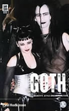

|
Trechos
do Livro "GOTH - Identity, Style and Subculture" de Paul
Hodkinson
No seu livro Goth: identity, style
and Subculture, Paul Hodkinson organiza três grandes
grupos de caracterísricas e símbolos da Subcultura
Gótica na Inglaterra. Sua pesquisa compara a cena gótica
Britânica do final dos anos 90, com a tradição
desta Subcultura desde o início dos anos 80. Confira uma
pequena introdução do livro e alguns trechos importantes
traduzidos.
Gótico
como Estilo Subcultural
"(...)
Não há espaço suficiente, aqui, para descrever
cada artefato específico valorizado na cena gótica,
nem para detalhar todas as formas complexas pelas quais góticos,
individualmente, os selecionam, os combinam e sutilmente os transgridem.
Simplesmente tentarei delinear os aspectos estilísticos mais
importantes da subcultura em relação a temas gerais
particularmente proeminentes e consistentes. Entitulados 'o
sombrio e o macabro', 'feminilidade e ambiguidade'
e 'fragmentos de estilos relacionados', estas são,
obviamente, categorias guarda-chuva artificiais e, como tais, inevitavelmente
caracterizadas por diversidade e sobreposição. Mais
uma vez é preciso enfatizar que os os indivíduos montavam
seu próprio estilo selecionando dentre os elementos que eu
descrevo e que, como consequência, poucos, senão nenhum,
adotavam todos eles. O valor destas categorias é que elas
permitem a demonstração da consistência estilística
geral da cena gótica, sem deixar de lado os elementos de
diversidade e dinamismo. (...)"
Tradução
de Henrique Kipper
Extraídos
de www.gothicstation.com.br
e adaptados por Spectrum

|